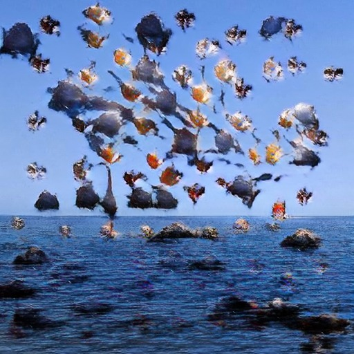

January the 27th
Entry #1: Arrival to the Principality
10:00AM - We have finally reached the land beyond. The Principality of Alis is warmer than stories told. The skies are dark right now, with 6 moons. We don't recall there ever being a mention of time in the tales.
11:00AM - Two tiny moons, tied together as allies to defeat a dragon.
12:00AM - We do not know how to reset ourselves, but we have no alternative, and nothing to lose. We are still afraid, but we must go forward.
01:00PM - On a darker note, there are 3 Red Crowns who wish you well on your quest. I'd take the stats for 2 cards from 10 hours ago, for a grander destiny than our own. We are hoping for encounters with the Horned Queen, the Invaded Farmers, and the Adventurers.
02:00PM - We look forward to the elements in the stories told by Grandiose Meister Rony, our first person narrator, who was due to arrive with us. Unfortunately, my telepathic ability is not powerful enough to tell him what he's really about to see and witness. I imagine it must be something he's looking forward to immensely, I mean it can't possibly be any worse than what we're doing right now.
Next Page 